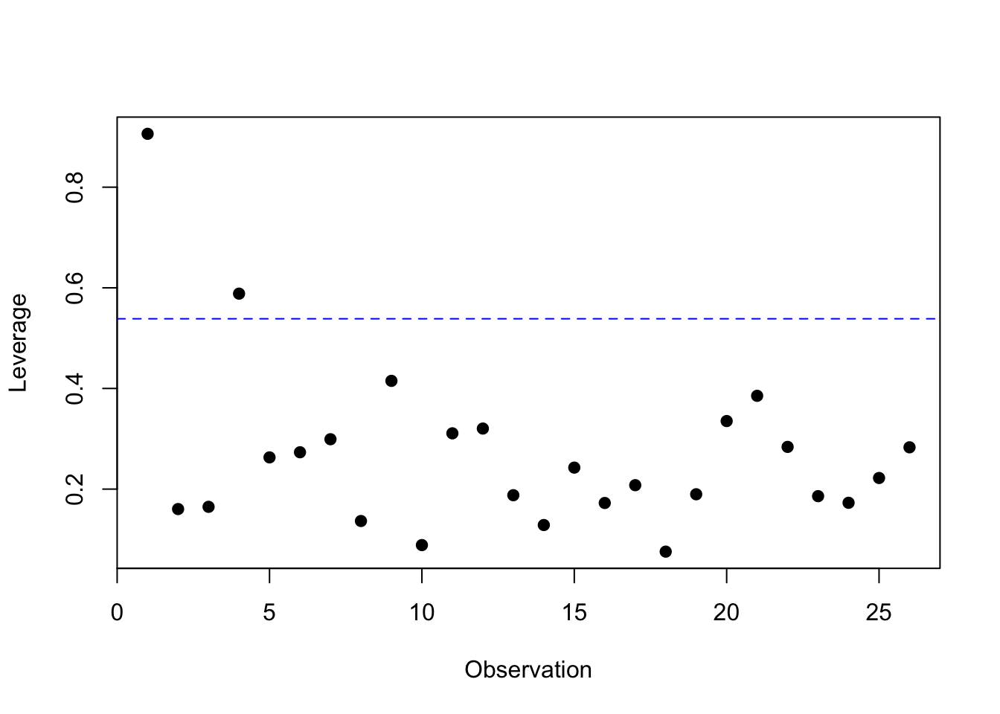
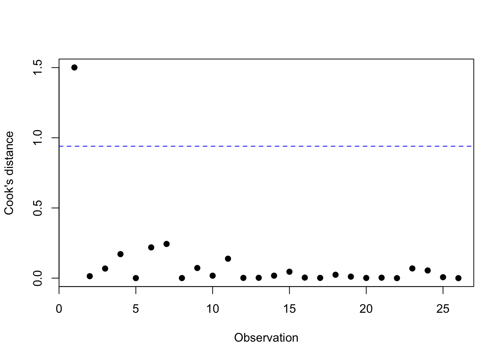

Often a lot of measurements for each subject (e.g., each animal or each plant) are collected in scientific experiments in biosciences. An ecologist could, for example, measure at the same time the number of a certain shrub on different plots of land, as well as the acidity of each plot in order to hopefully be able to describe a relationship between both. A biotechnologist might be interested in seeing which genes are important during which phase of the growth of a plant. He or she could therefore collect at appropriate times measurements for the expression of different genes and subsequently investigate the association between gene expression and time. The purpose of this chapter is to provide techniques to detect patterns and relations in complex datasets and then to use these relations to predict future outcomes. We will in particular focus on situations where we are interested in one specific continuous outcome and hope to understand its relationship with one or more continuous or qualitative variables.
2.1 The linear regression model
Although the correlation coefficient is frequently used in explorative and descriptive statistics to describe an association between 2 continuous measurements, it has a number of limitations:
Its numerical value is difficult to interpret;
It cannot be used to predict the value of the outcome \(Y\) (e.g., the number of nests of red land crabs in a certain area) based on some predictor value \(X\) (e.g., the biomass of crabs in that area);
It does not allow for an easy correction of the association between the variables \(X\) and \(Y\) for the disturbing influence of measured confounders;
It does not allow for an easy verification of whether the strength of the association between the variables \(X\) and \(Y\) depends on the value of a third variable \(Z\) (e.g., to verify if there exist gene-neighbourhood interactions where the influence that certain genes exert on the development of Chronic Obstructive Pulmonary Disease depends on smoking history);
It does not allow to describe nonlinear associations or associations between a continuous and a qualitative variable.
To handle these problems in a flexible way, we will use regression techniques.
Example: Woody debris and tree density
The human impact on freshwater environments concerns scientists a lot. Coarse woody debris (CWD) is fallen wood that provides a habitat for aquatic organisms and furthermore influences hydrological processes and the transport of organic materials within aquatic ecosystems. The presence of humans has altered the CWD input to aquatic systems. Chistensen et al. (1996) (TODO fix up reference) studied the connection between coarse woody debris and riparian vegetation in a sample of 16 North American lakes. They defined CWD as woody debris with a diameter larger than 5 cm and registered for a number of locations along the shoreline the CWD basal area (in m\(^2\) per km of shoreline) and the tree density (in number per km of shoreline). To obtain a single measurement per lake, weighted averages were used.
The goal of this study is to describe the association between the tree density along the shoreline of the lake and the relative basal area of CWD. Since we want to explain the effect of the tree density on CWD, we call tree density the explanatory, predictor or independent variable and the CWD basal area the outcome or dependent variable, i.e., the variable in which we are primarily interested. For the rest of this section, we will always use \(X\) for the independent variables and \(Y\) for the dependent variables.
Figure 2.1 plots the CWD basal area (in m\(^2\) per km) in function of the riparian tree density, together with a loess scatterplot smoother (dotted line). The plot gives no indication that the relation between both variables would not be linear. Hence the Pearson correlation coefficient is an appropriate measure. It is equal to 0.797, which suggests a strong increase in CWD basal area with an increased riparian tree density. We gain more insight in the strength of the association by studying the loess scatterplot smoother, since this function gives for every tree density value the expected outcome for the CWD basal area. Because this curve can be well approximated by a much simpler, linear relation, we also added the `best fitting’ straight line (full line; i.e., the least squares regression line) to the plot. This gives an even clearer image of the relationship between both variables than the correlation coefficient, and also uses only 1 parameter (namely the slope) to do so. In this section we will see how to construct and interpret this so-called regression line.
Code
trees <-read.csv("./datasets/01-regression/christ.csv")plot(CWD.BASA ~ RIP.DENS, data = trees,xlab ="Riparian tree density",ylab ="CWD basal area")m1 <-lm(CWD.BASA ~ RIP.DENS, data = trees)abline(m1)m2 <-loess(CWD.BASA ~ RIP.DENS, data = trees)j <-order(trees$RIP.DENS)lines(trees$RIP.DENS[j], m2$fitted[j], lty ="dashed")
Figure 2.1: CWD basal area in function of tree density, with linear regression line (solid line) and loess scatterplot smoother (dashed line).
We denote with \(E(Y|X=x)\) the mean outcome for the subgroup of the study population consisting of subjects for which the explanatory variable \(X\) takes on the value \(x\). For example, for the CWD example above, \(E(Y|X=1200)\) is the mean CWD basal area per km of shoreline for lakes that have 1,200 trees per km along their shoreline. We could in principle calculate this mean by registering, for all lakes in the study population with 1,200 trees per km of shoreline, the CWD basal area and then taking the mean of these values. The mean \(E(Y|X=x)\) is called a conditional mean because it describes a mean outcome, conditional on the fact that \(X=x\).
Now suppose that the mean outcome can be described linearly in function of the explanatory variable \(X\), which means that \[
E(Y|X=x)=\alpha + \beta x,
\tag{2.1}\] where \(\alpha\) and \(\beta\) are unknown numbers. In this expression, \(E(Y|X=x)\) represents the value on the \(Y\)-axis, \(x\) the value on the \(X\)-axis, the intercept\(\alpha\) indicates the intersection with the \(Y\)-axis, and \(\beta\) is the slope of the line. This expression is called a statistical model. This naming suggests that certain assumptions will be placed on the distribution of the observations. In particular it assumes that the mean outcome varies linearly in function of the predictor \(X\). For this reason, this is also called a simple linear regression model. According to this model, every measurement \(Y\) can be described, modulo an error term \(\epsilon\), as a linear function of the explanatory variable \(X\): \[
Y=E(Y|X=x)+\epsilon=\alpha+\beta x+\epsilon,
\] where \(\epsilon\) represents the deviation between the observed outcome and its (conditional) mean value, i.e., the uncertainty in the response variable.
The parameters \(\alpha\) and \(\beta\) are unknowns. If we could observe the entire study population, we could determine both parameters exactly (by calculating for two \(x\)-values the mean outcome and then solve the resulting system of linear equations as given by Equation 2.1). In reality we only observe a limited sample from the study population and hence we need to estimate both parameters based on the available information. The parameters are estimated by searching for the line that “best fits” the data.
In order to obtain a best-fitting line, we want that for each subject \(i\), the difference between the corresponding point on the regression line, \((x_i, \alpha + \beta x_i)\), and the observation itself, \((x_i, y_i)\), is as small as possible. This can be realised by choosing values for \(\alpha\) and \(\beta\) that minimise the sum of the squared distances between the predicted and the observed points: \[
\sum_{i=1}^n (y_i-\alpha-\beta x_i)^2.
\] The obtained line is called the least squares (regression) line. The corresponding values or estimations \(\hat{\alpha}\) for \(\alpha\) and \(\hat{\beta}\) for \(\beta\) are called the least squares estimates. It can be shown that \[
\hat{\beta}=\frac{\mbox{Cor}(x,y)s_y}{s_x}
\] and that \[
\hat{\alpha}=\bar y - \hat{\beta} \bar x.
\] Note that the slope of the least squares line is proportional to the correlation between the outcome and the explanatory variable.
Given the estimates \(\hat{\alpha}\) and \(\hat{\beta}\), the linear regression model 2.1 allows us to do two things:
To predict the expected outcome for subjects with a given \(x\)-value for the explanatory variable. If these subjects have the predictor equal to \(X = x\), then the expected outcome, \(Y\), is on average \[
E(Y \mid X = x) = \hat{\alpha}+\hat{\beta}x.
\]
To verify how much the outcome differs on average between two groups of subjects with a difference of \(\delta\) units in the explanatory variable. This is: \[
E(Y \mid X=x+\delta)-E(Y \mid X=x) = \alpha + \beta (x+\delta) -\alpha-\beta x = \beta\delta.
\] In particular, \(\beta\) can be interpreted as the difference in mean outcome between two subjects that differ by one unit in \(X\)-value. This difference can be estimated by \(\hat{\beta}\).
Woody debris and tree density, continued
We can build a linear model in R by means of the lm command:
Code
m_cwd <-lm(CWD.BASA ~ RIP.DENS, data = trees)summary(m_cwd)
Call:
lm(formula = CWD.BASA ~ RIP.DENS, data = trees)
Residuals:
Min 1Q Median 3Q Max
-38.62 -22.41 -13.33 26.16 61.35
Coefficients:
Estimate Std. Error t value Pr(>|t|)
(Intercept) -77.09908 30.60801 -2.519 0.024552 *
RIP.DENS 0.11552 0.02343 4.930 0.000222 ***
---
Signif. codes: 0 '***' 0.001 '**' 0.01 '*' 0.05 '.' 0.1 ' ' 1
Residual standard error: 36.32 on 14 degrees of freedom
Multiple R-squared: 0.6345, Adjusted R-squared: 0.6084
F-statistic: 24.3 on 1 and 14 DF, p-value: 0.0002216
The software reports \(\hat{\alpha}=-77.09908\) and \(\hat{\beta}=0.11552\). We conclude that, per km of shoreline, the CWD basal area increases on average with 1.2 m\(^2\) per increase of 10 trees in tree density. Furthermore, we can predict what CWD basal area can be expected for any given number of trees per km of shoreline. For example, if the tree density is 1,600 trees per km shoreline, we expect a mean CWD basal area of \(-77.09908 +0.11552\times 1600=108\) m\(^2\) per km shoreline.
From Figure 2.1 you can see that the dataset does not contain any lakes with a tree density of approximately 1,600 trees per km of shoreline. Based on the dataset it would thus not be possible, without using a statistical model, to obtain an estimate for the mean CWD basal area for that given tree density. However, assuming that the mean CWD basal area varies linearly with the riparian tree density, we can use all observations to estimate this mean. Hence we obtain a meaningful and precise result, if the condition of linearity is met of course.
For the results obtained from the linear regression model to be valid, it is important to verify that all conditions that are imposed by the model are met. So far, the only assumption we made was that the mean outcome varies linearly in function of the explanatory variable (later on, we will add more conditions to also determine the variability of the data around the regression line). This assumption can easily be verified graphically using a scatterplot where we plot the outcome in function of the explanatory variable and then check if the relation seems to follow a linear pattern. Deviations from linearity can usually be discovered more easily by means of a residual plot. This is a scatterplot with the explanatory variable on the \(X\)-axis and the residuals on the \(Y\)-axis. The residuals are the prediction errors that can be calculated as \[
e_i=y_i-\hat{y}_i=y_i-\hat{\alpha}-\hat{\beta}x_i.
\] They represent the vertical distance between the observation for subject \(i\) and its prediction on the regression line.
In practice, it is often more convenient to put the fitted values on the \(x\)-axis, rather than the values of the predictor. This is especially useful for multiple linear regression, where there are several predictors. We will follow this convention for the residual plot from now on.
If the assumption of linearity holds, then there should be no pattern visible in the residual plot. This is the case in Figure 2.2 that shows a residual plot for the regression analysis of the CWD example. However, when the residuals reveal a nonlinear pattern, this means that extra terms should be added to the model to correctly predict the mean outcome. For example, if the residuals show a quadratic pattern, then we could write that approximately \(e_i\approx \delta_0+\delta_1 x_i+\delta_2 x_i^2\) for some numbers \(\delta_0\), \(\delta_1\), and \(\delta_2\), and hence that the outcome \(y_i=\hat{\alpha}+\hat{\beta}x_i+e_i\approx (\hat{\alpha}+\delta_0)+(\hat{\beta}+\delta_1)x_i+\delta_2 x_i^2\) (modulo an error term) is a quadratic function of \(x_i\). In that case it is best to switch to a quadratic regression model.
Code
plot(m_cwd, which =1)
Figure 2.2: Residual plot for the CWD data.
Since the linearity of the model can only be verified over the observed range of the explanatory variable (for example, over the interval [771; 2,150] for the CWD data), it is important to understand that the results of a linear model cannot just be extrapolated past the largest or smallest observed \(X\)-value. In the CWD example we can estimate that the mean CWD basal area for lakes with a riparian tree density of 750 per km of shoreline will be \(-77.09908 +0.11552\times 750=9.5\) m\(^2\), but the observed data do not allow us verify the reliability of this estimation. After all, it could be that the regression line for low values of the predictor variable increases or decreases, causing the linear extrapolation to be misleading. Note that, for example, the prediction for a tree density of 500 per km of shoreline is very misleading, since it gives a negative result (\(-77.09908 +0.11552\times 500=-19\) m\(^2\)).
Frequency of Lap94 and distance from Southport
For the next example, we consider the blue or common mussel (Mytilus edulis). We are especially interested in the frequency of the allele Lap94 with respect to the eastern distance from Southport, Connecticut, U.S.A.
We have obtained a dataset of 17 mussels, where for each mussel we record the frequency of the Lap94 allele, and the distance to the Southport seabord. This dataset is shown in Figure 2.3.
Code
southport <-read.csv("datasets/01-regression/southport.txt", sep =" ")plot(freq ~ km, data = southport,xlab ="Distance (in km)",ylab ="Frequency")# linear modelm_linear <-lm(freq ~ km, data = southport)abline(m_linear, lty ="dotted")# quadratic modelm_quad <-lm(freq ~ km +I(km^2), data = southport)km_dense <-seq(0, 110, length.out =100)lines(km_dense, predict(m_quad, new =data.frame(km = km_dense)))# loess modelm_loess <-loess(freq ~ km, data = southport)lines(southport$km, m_loess$fitted, lty ="dashed")
Figure 2.3: Frequency of Lap94 in function of the eastern distance from Southport, with linear regression line (dotted line), quadratic regression line (solid line), and loess scatterplot smoother (dashed line)
A linear regression model shows that the expected gene frequency differs by 2.2% between mussels that are located at a 10 km eastern distance from each other.
Code
m_linear <-lm(freq ~ km, data = southport)summary(m_linear)
Call:
lm(formula = freq ~ km, data = southport)
Residuals:
Min 1Q Median 3Q Max
-0.13744 -0.05784 0.01486 0.03923 0.10675
Coefficients:
Estimate Std. Error t value Pr(>|t|)
(Intercept) 0.045830 0.036361 1.26 0.227
km 0.004514 0.000536 8.42 4.56e-07 ***
---
Signif. codes: 0 '***' 0.001 '**' 0.01 '*' 0.05 '.' 0.1 ' ' 1
Residual standard error: 0.06955 on 15 degrees of freedom
Multiple R-squared: 0.8254, Adjusted R-squared: 0.8137
F-statistic: 70.9 on 1 and 15 DF, p-value: 4.557e-07
Figure 2.4 shows a residual plot based on linear regression. We see that that residuals display a systematic pattern, which is approximately parabolic. This suggests that adding a quadratic term to the model will improve the reliability of the regression model.
Code
par(mfrow =c(1, 2))plot(m_linear, which =1, main ="Linear regression")plot(m_quad, which =1, main ="Quadratic regression")
Figure 2.4: Residual plots for linear regression (left) and quadratic regression (right), with loess scatterplot smoother.
Adding a quadratic term gives the following model:
Code
m_quad <-lm(freq ~ km +I(km^2), data = southport)summary(m_quad)
Call:
lm(formula = freq ~ km + I(km^2), data = southport)
Residuals:
Min 1Q Median 3Q Max
-0.10054 -0.03766 -0.01147 0.03678 0.11003
Coefficients:
Estimate Std. Error t value Pr(>|t|)
(Intercept) 1.173e-01 4.805e-02 2.441 0.0285 *
km 5.257e-04 2.008e-03 0.262 0.7973
I(km^2) 3.655e-05 1.786e-05 2.047 0.0599 .
---
Signif. codes: 0 '***' 0.001 '**' 0.01 '*' 0.05 '.' 0.1 ' ' 1
Residual standard error: 0.06316 on 14 degrees of freedom
Multiple R-squared: 0.8656, Adjusted R-squared: 0.8464
F-statistic: 45.09 on 2 and 14 DF, p-value: 7.919e-07
Figure 2.4 (right) shows a residual plot based on this quadratic regression and indicates that the previously found pattern has mostly disappeared. Hence this model better describes the data. In subsequent sections we will investigate whether the model can be improved further.
2.2 The residual standard deviation
The CWD linear regression model from the previous section indicates how much (in particular, what basal area of) woody debris we can expect along North American lakes with a certain tree density. However, it does not inform us how much this area can vary between lakes with the same tree density. Nevertheless, it is of the utmost importance to know this when we want to make predictions based on the regression model, since outcomes that vary a lot around the regression line can of course not be predicted accurately by using the regression line, as opposed to outcomes with little variation around the line which can be predicted relatively accurately.
If the outcomes for lakes with the same predictor value \(x\) (i.e., tree density) are normally distributed, then it makes sense to express the variation of the outcomes around their mean by means of a conditional variance\(\text{Var}(Y \mid X=x)\). Similarly to the conditional mean \(E(Y \mid X=x)\), this indicates the variance on the outcomes for the subgroup from the study population consisting of lakes for which the tree density \(X\) takes on the value \(x\). For example, \(\text{Var}(Y \mid X=1,300)\) in the CWD example is the variance on the CWD basal area per km of shoreline for lakes with a riparian tree density of 1,300 per km. These variances cannot just be estimated, since there is only 1 observation in the dataset with a tree density of 1,300. When we examine Figure 2.2, we see that the points are equally spread around the regression line, irrespective of the tree density, and that the variability on the basal area of coarse woody debris does not seem to depend on the tree density. In this case, we call the outcomes homoscedastic or the variance is said to be homogeneous. It then makes sense to assume that the conditional variance \(\text{Var}(Y \mid X=x)\) is constant: \[
\text{Var}(Y \mid X=x) = \sigma^2.
\tag{2.2}\] The constant \(\sigma\) is called the residual standard deviation. If we assume Equation 2.2, we are able to determine the conditional variance \(\text{Var}(Y \mid X=1300)=\sigma^2\), because then it can be estimated based on the data for all lakes, as will be illustrated in the next paragraph.
As we have learned in descriptive statistics, the variation of the outcomes around their conditional mean can be described by means of the differences between the observations \(y_i\) and their (estimated) mean \(\hat{\alpha}+\hat{\beta}x_i\), or in other words, through the residuals. However, the mean of the residuals is always 0 because the positive and negative deviations cancel each other out. Hence the mean residual is not a good measure for the variation, and it is more sensible to use the squared deviations \(e_i^2\). The mean of these squared residuals therefore will give a good measure. In particular it can be shown that the so-called residual mean squared error, given by \[
\hat{\sigma}^2=\frac{\sum_{i=1}^n e_i^2}{n-2}=s_y^2\{1-\mbox{Cor}(x,y)^2\}
\tag{2.3}\] is a good (i.e., unbiased) estimate of \(\sigma^2\). Remark that the size of the residual mean squared error is closely connected with the correlation. If the outcome is independent from the predictor variable, the variability of the outcomes around the regression line is the same as the total variability, as denoted by the standard deviation \(s_y\). If the variables \(X\) and \(Y\) are (perfectly) linearly dependent on each other, the correlation is 1, and hence there is no variation around the regression line. This is logical, since in that case the data points form a straight line and therefore do not vary around that line.
Woody debris and tree density, continued
Previously, the R model summary for the CWD model gave the following estimate for the residual standard deviation:
Residual standard error: 36.32 on 14 degrees of freedom
Assuming the CWD basal area is normally distributed for a given tree density, we can conclude that respectively 68% and 95% of those basal areas given a tree density of 1,300 per km can be expected to fall in the intervals \([73-36, 73+36] = [37, 109]\) and \([73-2\times 36, 73 + 2\times 36] = [1, 145]\). Thus we obtain a fairly wide 95% reference interval for the CWD basal area when the tree density is 1,300 trees per km of shoreline. These intervals are not completely accurate since they do not take the imprecision of the estimates of the mean outcome and residual standard deviation into account. in the literature there exist so-called prediction intervals which do take this imprecision into account.
For the previous results to be valid, it is of course again important that all conditions imposed by the model are met. This time we do not only have the assumption of linearity, but more importantly also the assumption of homoscedasticity of the outcomes. Since, according to Equation 2.3, the squared residuals are indicative for the variability that is present in the data, we can investigate this assumption by making a scatterplot of the squared residuals (on the \(Y\)-axis) in function of the explanatory variable (on the \(X\)-axis).This is illustrated for the CWD data in Figure 2.5 (left), which seems to suggest that the variability increases for increasing tree densities. Consequently, the reference intervals that have been calculated assuming homoscedasticity cannot be fully trusted. In particular they might be too narrow for high tree densities and too wide for low tree densities.
Code
par(mfrow =c(1, 2))plot(m_cwd, which =1)plot(m_cwd, which =2)
Figure 2.5: Analysis of the CWD data. Left: scatterplot of the squared residuals. Right: QQ-plot of the residuals.
Even if the variance would be homogeneous, it is still important to verify that the outcomes are normally distributed for subjects with the same predictor value in order for the residual standard deviation to be a meaningful measure to describe the variability on the data and for the calculated reference intervals to be correct. A QQ-plot of the outcomes would be misleading, since this checks the normality of all measurements as a whole, not the normality of the measurements for subjects with the same predictor value. It can be shown that normally distributed outcomes for a given \(x\)-value implies that the residuals are also approximately normally distributed. Hence deviations from normality in a QQ-plot for the residuals indicate that the outcomes are not normally distributed for a fixed \(x\). Figure 2.5 (right) illustrates this for the CWD data and shows deviations from normality. This is not surprising, since heterogeneity of the variance often goes together with non-normality, in particular skewness, of the data.
Finally it is also necessary that all outcomes are independent to obtain correct estimations of the residual standard deviation. This would not be the case in so-called longitudinal studies where the outcome is measured repeatedly over time for the same subject.
In the next section we will describe how to handle deviations from the previously mentioned assumptions.
2.3 Deviations from the assumptions in linear regression analysis
The primary assumption in linear regression analysis is the assumption that the outcome varies linearly in the predictor. Whenever residual plots suggest that this is not the case, we could consider transforming the explanatory variable. In dose-response studies where, for example, the impact of increasing doses of a toxic substance on a phenotype in test animals is studied, the (mean) outcome will often not vary linearly in function of the administered dose, but will vary linearly in function of the logarithm of the administered dose. In that case, we could opt to include the log-transformed explanatory variable as a predictor in the model. For other examples it might happen that other transformations than the log-transformation are better suited, such as the square root (\(\sqrt{x}\)) or the inverse (\(1/x\)) transformation.
An advantage of transforming the explanatory variable is that it is easy to accomplish, a disadvantage is that this often complicates the interpretation of the coefficient in the model. However, this will not happen when applying a log-transformation, because an increase in log-dose with, for example, 1 unit is equivalent with a change in dose with a factor \(\exp(1)=2.78\). Transforming the explanatory variable does not have a direct influence on the homogeneity of the variance or on the normality of the outcomes (for fixed values of the predictor variable), except by improving the linearity of the model. Therefore this option is often less suitable when there are strong deviations from normality.
An alternative option to improve the linearity of the model, is higher-order regression. Here nonlinear relations are directly modeled by including higher-order terms in the model. We could, for example, consider a second-order model \[
E(Y|X) = \alpha+\beta_1X+\beta_2X^2,
\] in which case the regression curve will be parabolic, or a third-order model: \[
E(Y|X) = \alpha+\beta_1X+\beta_2X^2+\beta_3X^3,
\] where the regression curve will be a polynomial of degree 3. This method can be seen as some sort of transformation of the explanatory variable and essentially has the same properties, advantages, and disadvantages. However, an additional advantage is that in this case there is no need to decide yourself on a transformation, because the method itself will implicitly estimate a good polynomial.
Finally we could also consider transforming the outcome instead of the explanatory variable. For example, when the outcomes are right skewed, it is often appropriate to perform a log-transformation of the outcomes and include this new variable as the outcome variable in the model. Usually this not only improves the linearity of the model, but it will also improve the normality of the residuals with a more constant variability. This method has the same advantages and disadvantages as a transformation of the explanatory variable. A big difference between both options that greatly influences the choice between both methods is that, contrary to transformations of the outcome, transformations of the independent variable have little to no influence on the distribution of the residuals (unless via changes in their mean). Normally distributed residuals in particular will remain rather normally distributed after transforming the explanatory variable, whereas they might no longer be normally distributed after a transformation of the outcome variable, and vice versa.
Woody debris and tree density, continued
In the analysis of the CWD model we determined that, although the linearity assumption is well met for the chosen model, the residuals are not normally distributed with a constant variance. Therefore a transformation of the outcome is the only sensible choice out of the previously mentioned options. The fact that the outcomes can only take on nonnegative values compels us to consider the log-transformation because that transformation extends the range of the outcomes to all real values. This is indeed desirable since a linear regression model basically allows the mean outcome to vary from \(-\infty\) to \(+\infty\), as long as we vary the predictor \(x\) enough. Remark that we, as a result of this, indeed obtained negative predictions for the CWD basal area for lakes with relatively few trees along the shoreline.
Log-transforming the outcome gives us the following model:
m_log <-lm(log(CWD.BASA) ~ RIP.DENS, data = trees)summary(m_log)
Call:
lm(formula = log(CWD.BASA) ~ RIP.DENS, data = trees)
Residuals:
Min 1Q Median 3Q Max
-2.23086 -0.78379 0.04559 0.72335 2.05022
Coefficients:
Estimate Std. Error t value Pr(>|t|)
(Intercept) -0.5570100 1.0739690 -0.519 0.6121
RIP.DENS 0.0031573 0.0008222 3.840 0.0018 **
---
Signif. codes: 0 '***' 0.001 '**' 0.01 '*' 0.05 '.' 0.1 ' ' 1
Residual standard error: 1.274 on 14 degrees of freedom
Multiple R-squared: 0.513, Adjusted R-squared: 0.4782
F-statistic: 14.75 on 1 and 14 DF, p-value: 0.001802
The residual plots for this model are shown in Figure 2.6 below.
Code
add_loess_line <-function(x, y) { ll <-loess(y ~ x) j <-order(x)lines(x[j], ll$fitted[j], lty ="dashed")}par(mfrow =c(1, 3))plot(trees$RIP.DENS, m_log$residuals,xlab ="Riparian tree density",ylab ="Residuals")add_loess_line(trees$RIP.DENS, m_log$residuals)plot(trees$RIP.DENS, m_log$residuals^2,xlab ="Riparian tree density",ylab ="Squared residuals")add_loess_line(trees$RIP.DENS, m_log$residuals^2)plot(m_log, which =2)
Figure 2.6: Analysis of the CWD data (linear trend on logarithmic scale). Left: scatterplot of the residuals. Middle: scatterplot of the squared residuals. Right: QQ-plot of the residuals.
Although the residuals follow relatively well the normal distribution, deviations from linearity and homoscedasticity emerge. The pattern in Figure 2.6 seems to be parabolic and makes it necessary to include a second order term in the model, so that we obtain the following model:
Call:
lm(formula = log(CWD.BASA) ~ RIP.DENS + I(RIP.DENS^2), data = trees)
Residuals:
Min 1Q Median 3Q Max
-1.6872 -0.4462 -0.1621 0.4214 2.1399
Coefficients:
Estimate Std. Error t value Pr(>|t|)
(Intercept) -9.686e+00 3.114e+00 -3.110 0.00828 **
RIP.DENS 1.726e-02 4.673e-03 3.693 0.00270 **
I(RIP.DENS^2) -4.960e-06 1.628e-06 -3.047 0.00935 **
---
Signif. codes: 0 '***' 0.001 '**' 0.01 '*' 0.05 '.' 0.1 ' ' 1
Residual standard error: 1.01 on 13 degrees of freedom
Multiple R-squared: 0.7159, Adjusted R-squared: 0.6722
F-statistic: 16.38 on 2 and 13 DF, p-value: 0.0002801
Compared to Figure 2.6, the residual plots for this model show somewhat less of a pattern.
Code
par(mfrow =c(1, 3))plot(trees$RIP.DENS, m_log_quad$residuals,xlab ="Riparian tree density",ylab ="Residuals")add_loess_line(trees$RIP.DENS, m_log_quad$residuals)plot(trees$RIP.DENS, m_log_quad$residuals^2,xlab ="Riparian tree density",ylab ="Squared residuals")add_loess_line(trees$RIP.DENS, m_log_quad$residuals^2)plot(m_log_quad, which =2)
Figure 2.7: Analysis of the CWD data (quadratic trend on logarithmic scale). Left: scatterplot of the residuals. Middle: scatterplot of the squared residuals. Right: QQ-plot of the residuals.
Code
m_log_quad <-lm(log(CWD.BASA) ~ RIP.DENS +I(RIP.DENS^2), data = trees)summary(m_log_quad)
Call:
lm(formula = log(CWD.BASA) ~ RIP.DENS + I(RIP.DENS^2), data = trees)
Residuals:
Min 1Q Median 3Q Max
-1.6872 -0.4462 -0.1621 0.4214 2.1399
Coefficients:
Estimate Std. Error t value Pr(>|t|)
(Intercept) -9.686e+00 3.114e+00 -3.110 0.00828 **
RIP.DENS 1.726e-02 4.673e-03 3.693 0.00270 **
I(RIP.DENS^2) -4.960e-06 1.628e-06 -3.047 0.00935 **
---
Signif. codes: 0 '***' 0.001 '**' 0.01 '*' 0.05 '.' 0.1 ' ' 1
Residual standard error: 1.01 on 13 degrees of freedom
Multiple R-squared: 0.7159, Adjusted R-squared: 0.6722
F-statistic: 16.38 on 2 and 13 DF, p-value: 0.0002801
We conclude that \[
E\{\ln(Y)|X\}=-9.7+0.017X-5.0 \ 10^{-6}X^2
\] or, equivalently, that the geometric mean CWD basal area varies in function of the tree density \(X\) as \(\exp(-9.7+0.017X-5.0 \ 10^{-6}X^2)\). Although the estimated geometric mean for high tree densities suggests a stabilising or even declining trend in the amount of CWD with increasing tree density, the accompanying 95% confidence intervals indicate that this suggestion is very imprecise and that even strong increases are compatible with the observed data. The regression line and associated confidence intervals are shown in Figure 2.8 below.
Figure 2.8: Scatterplot of the CWD basal area versus tree density \(X\) with linear regression line (dotted line), estimated geometric mean \(\exp(-9.7+0.017X-5.0 \ 10^{-6}X^2)\) (solid line), and accompanying 95% confidence intervals (dashed lines).
For certain types of outcomes there exist variance stabilising transformations for the outcome that are aimed at fulfilling the assumption of homoscedasticity. For proportions or percentages we often use the arcsin-transformation which transforms the outcome \(Y\) in \(\arcsin\sqrt{Y}\), because it can be shown that percentages (given certain conditions) have a constant variance after such a transformation. If the transformation of the outcome is not helping or is not appropriate (e.g., because it is harmful for the interpretation of the model) and there is a consistent pattern of unequal variance (e.g., increasing variance in the outcome for increasing predictor values), we could also determine weighted least squares estimates. Another alternative would be to estimate generalized linear models, which also allow other distributions than the normal one. Both types of solutions, i.e., weighted least squares estimates and generalized linear models, are beyond the scope of this course.
2.4 Inference in regression models
In linear regression analysis we often want to test whether or not the slope \(\beta\) is equal to 0, i.e., whether or not a linear relation between \(Y\) and \(X\) exists. We wish, for example, to test if the CWD basal area per km is linearly related to the tree density, or if there exists a linear relation between the gene frequency of the allele Lap94 in the mussel Mytilus edulis and the eastern distance from Southport. We can show that the least squares estimate \(\hat{\beta}\) is a sensible measure to perform tests on \(\beta\) since it is an unbiased estimator of \(\beta\) (and hence not systematically too high or too low), on the condition that the model is correct. If additionally the outcomes are normally distributed for a given predictor value \(X\), and have a homogeneous variance, then its standard error can be estimated as \[
SE(\hat{\beta})=\sqrt{\frac{MSE}{\sum_i (X_i-\bar X)^2}},
\] where the (\(MSE\)) is defined as \(\frac{1}{n}\sum_{i=1}^n (Y_i - \hat{Y}_i)^2\), and we can obtain tests and confidence intervals for \(\beta\) based on \[
\frac{\hat{\beta}-\beta}{SE(\hat{\beta})}\sim t_{n-2}.
\]
Frequency of Lap94 and distance from Southport
Previously we established, admittedly under the wrong assumption that the gene frequency varies linearly in function of the eastern distance from Southport, the following model:
Code
summary(m_linear)
Call:
lm(formula = freq ~ km, data = southport)
Residuals:
Min 1Q Median 3Q Max
-0.13744 -0.05784 0.01486 0.03923 0.10675
Coefficients:
Estimate Std. Error t value Pr(>|t|)
(Intercept) 0.045830 0.036361 1.26 0.227
km 0.004514 0.000536 8.42 4.56e-07 ***
---
Signif. codes: 0 '***' 0.001 '**' 0.01 '*' 0.05 '.' 0.1 ' ' 1
Residual standard error: 0.06955 on 15 degrees of freedom
Multiple R-squared: 0.8254, Adjusted R-squared: 0.8137
F-statistic: 70.9 on 1 and 15 DF, p-value: 4.557e-07
Based on this output we can construct a 95% confidence interval for \(\beta\) as \[
[0.004514 - 2.13\times 0.000536,0.004514 + 2.13\times 0.000536]=[0.003372,0.005656],
\] where we use the fact that we posses \(n=17\) observations and that \(t_{15,0.975}=2.13\). We conclude that the mean increase in the frequency of the allele Lap94 as we move 10 km east of Southport can be expected between 3.372% and 5.656% with 95% confidence. The p-value for the test of the null hypothesis \(\beta=0\) (versus the alternative \(\beta\ne 0\)) is the probability that a \(t_{15}\)-distributed random variable in absolute value is larger than \(0.004515/0.000536 = 8.42\). This probability is \(4.56 \times 10^{-7}\) and gives a very strong indication that there is a change in mean allele frequency in the eastern direction from Southport.
We could also test if the intercept takes on a certain value (e.g., 0). Again the least squares estimate \(\hat{\alpha}\) is meaningful since it is an unbiased estimator of \(\alpha\), provided that the model is correct. If additionally the outcomes are normally distributed for a given predictor value \(X\), and have a homogeneous variance, then its standard error can be estimated as \[
SE(\hat{\alpha})=\sqrt{MSE\left\{\frac{1}{n}+\frac{\bar X^2}{\sum_i (X_i-\bar X)^2}\right\}}.
\] Tests and confidence intervals for \(\alpha\) can be obtained based on \[
\frac{\hat{\alpha}-\alpha}{SE(\hat{\alpha})}\sim t_{n-2}.
\] Similarly, \(\hat{Y}_h=\hat{\alpha}+\hat{\beta}X_h\) will be an unbiased estimator of \(E(Y|X_h)=\alpha+\beta X_h\). Its standard error is \[
SE(\hat{Y}_h)=\sqrt{MSE\left\{\frac{1}{n}+\frac{(X_h-\bar X)^2}{\sum_i (X_i-\bar X)^2}\right\}}.
\] and tests and confidence intervals for \(E(Y|X_h)\) depend on \[
\frac{\hat{Y}_h-E(Y|X_h)}{SE(\hat{Y}_h)}\sim t_{n-2}.
\]
Frequency of Lap94 and distance from Southport
The p-value for the test that the allele frequency \(\alpha\) in Southport is 1%, versus the alternative that it would be less, is the probability that a \(t_{15}\)-distributed random variable is smaller than \((0.045830 - 0.01)/0.036361=0.9853964\). This probability is 0.17 and suggests that, at the 5% significance level, there is not enough evidence to support the claim that the allele frequency in Southport is less than 1%. A 95% confidence interval for \(\alpha\) is obtained as \[
[0.045830 - 2.13\times 0.036361, 0.045830 + 2.13\times 0.036361]=[-0.031619,0.123279].
\] The fact that this interval contains negative values suggests that the allele frequency \(\alpha\) in Southport was estimated very inaccurately and that the linear model probably does not describe these data very well (since theoretically allele frequencies cannot be negative).
2.5 The multiple correlation coefficient
For the data in the CWD example, the standard deviation on the CWD basal area is 58.03 per km and the residual standard deviation is 36.32 per km. This shows that the measurements of the outcome vary less for lakes with the same tree density than in the entire population of lakes. This is not surprising, because part of the variability on the outcome measurements is explained by the fact that different lakes have different tree densities. In this section we will further exploit this idea to gain insight in the quality of the regression line.
The total squared deviation of the data around their mean can be split as follows: \[\begin{eqnarray*}
SS_{Total}=\sum_{i=1}^n (y_i-\bar y)^2&=&\sum_{i=1}^n (\hat{\alpha}+\hat{\beta}x_i-\bar y)^2+ \sum_{i=1}^n (y_i-\hat{\alpha}-\hat{\beta}x_i)^2 \\
&=&\sum_{i=1}^n (\hat{\alpha}+\hat{\beta}x_i-\bar y)^2+ \sum_{i=1}^n e_i^2 \\
&=&SS_{Regression}+SS_{Residual} \,.
\end{eqnarray*}\] For the second equality, we’ve used the defining relations for the coefficients of a linear regression, i.e. \[
\sum_{i=1}^n ( \hat{\alpha} + \hat{\beta} x_i - y_i) = 0 \quad \text{and} \quad \sum_{i=1}^n ( \hat{\alpha} + \hat{\beta} x_i - y_i) x_i = 0
\] to show that the cross-product vanishes.
In this sum, \(SS_{Regression}=\sum_{i=1}^n (\hat{\alpha}+\hat{\beta}x_i-\bar y)^2\) indicates how much the points on the regression line vary around the group mean \(\bar y\), and the \(SS_{Residual}=\sum_{i=1}^n e_i^2\) reflects the residual variation of the observations around the regression line. The latter is called the residual sum of squares and indicates how much of the variation on the measurements is not explained by the regression model. The former is the regression sum of squares and indicates the amount of variability on the measurements that is explained by the regression model. The ratio of the regression sum of squares and the total sum of squares \(SS_{Total}\), \[
R^2=\frac{SS_{Regression}}{SS_{Total}}
\] expresses the percentage of the variation on the data that is captured by their association with the explanatory variable, and is called the coefficient of determination or multiple correlation coefficient. It is generally denoted by \(R^2\) and is a measure for the predictive value of the explanatory variable. In other words, it expresses how well the explanatory variable(s) predict(s) the outcome. This coefficient lies always between 0 and 1, where a value equal to 1 indicates that there is no residual variation around the regression line en hence the outcome shows a perfect (linear) relationship with the predictor. Analogously, a value 0 of \(R^2\) implies that there is no association between the outcome and the predictor.
Often it is incorrectly claimed that a linear regression model is bad if the multiple correlation coefficient is low (e.g., 0.2). If the goal of the study is to predict the outcome based on the explanatory variables, a large value of \(R^2\) is indeed needed because in the case of a low value there remains a lot of variability on the outcomes that is not explained by the explanatory variables. However, if the goal of the study is to determine the effect of an exposure on the outcome, then a linear regression model is good as soon as it correctly describes the association between on the one hand the outcome and on the other hand the exposure and possible confounders. Whenever exposure and confounders are weakly related to the outcome, then a small \(R^2\)-value is expected, even if a correct regression model is used.
Woody debris and tree density
Recall that we found the following model for the logarithm of the CWD basal area and the riparian tree density:
Code
summary(m_log_quad)
Call:
lm(formula = log(CWD.BASA) ~ RIP.DENS + I(RIP.DENS^2), data = trees)
Residuals:
Min 1Q Median 3Q Max
-1.6872 -0.4462 -0.1621 0.4214 2.1399
Coefficients:
Estimate Std. Error t value Pr(>|t|)
(Intercept) -9.686e+00 3.114e+00 -3.110 0.00828 **
RIP.DENS 1.726e-02 4.673e-03 3.693 0.00270 **
I(RIP.DENS^2) -4.960e-06 1.628e-06 -3.047 0.00935 **
---
Signif. codes: 0 '***' 0.001 '**' 0.01 '*' 0.05 '.' 0.1 ' ' 1
Residual standard error: 1.01 on 13 degrees of freedom
Multiple R-squared: 0.7159, Adjusted R-squared: 0.6722
F-statistic: 16.38 on 2 and 13 DF, p-value: 0.0002801
We conclude that 71.6% of the variability on the log-transformed CWD basal area is explained by its association with the tree density. The riparian tree density is thus strongly predictive for the CWD basal area.
2.6 Multiple linear regression
So far we focused on describing the association between a certain outcome \(Y\) and a single predictor \(X\). However, it is often more useful to describe the mean outcome not in terms of only one, but in terms of multiple predictors at the same time. This is illustrated in the following examples:
Often the association between a predicting variable \(X\) and an outcome \(Y\) will be disturbed due to a confounder \(C\). For example, when determining the effect of asbestos (\(X\)) on the respiratory function (\(Y\)), age (\(C\)) is a confounder because it influences both the duration of the exposure and the respiratory function. To correct for this confounding, it is necessary to describe the association between \(X\) and \(Y\) separately for people of the same age (in other words, individuals with the same value for the confounder). Performing a separate linear regression for each observed age \(c\) amongst those people of that age \(c\), doesn’t make sense since usually there are only very little people with exactly the same age in a study. Especially when there are multiple confounders, this becomes problematic. In this section we will solve this problem by including the confounder \(C\) in the linear model.
In many studies we are interested in knowing which group of variables influences the outcome most. For example, understanding which aspects of habitat and human activity have a major impact on the biodiversity of the rain forest is an important objective of conservation biology. To that end, not only the size of the forest has to be taken into account, but also other factors, such as age and altitude of the forest, proximity of other forests, and so on. A study of the simultaneous effect of the different variables will allow us to get a deeper understanding of the variation in biodiversity between different forests. By inspecting in particular forests with a low or high biodiversity, new predictive factors for biodiversity might be discovered.
Whenever we want to predict an outcome for individuals, it is crucial that a lot of predictive information is available and that this information is used simultaneously in a regression model. For example, the prognosis after treatment is highly uncertain for patients with an advanced stage of breast cancer. However, based on measured predictors before and after the operation, it would be possible to construct regression models that allow to predict a prognosis for each patient, using his or her own characteristics. Related predictions (but then for mortality risk) are used daily in intensive care units to express the severity of a patient’s health. It goes without saying that better predictions can be made when a large number of predictors is taken into account at the same time.
Mineral composition vs growth
In this example we study the relation between the growth and mineral composition of the needles of the Japanese larch. The height \(Y\) of 26 trees was measured in cm, and for each tree the proportions of nitrogen \(X_n\), phosphorus \(X_f\), potassium \(X_p\) and residual ash \(X_r\) in dried needles were registered. Univariate regression models such as \[
E(Y|X_f)=\alpha+\beta_f X_f
\] only allow us to predict the height of a tree based on a single mineral. Obviously, we could obtain more accurate predictions if multiple minerals are taken into account at the same time.
Note that for example the coefficient \(\beta_f\) in such a model might not show the pure effect of phosphorus. It is true that \(\beta_f\) represents the mean difference in length between trees that differ by 1 unit in phosphorus, but even if phosphorus would not have an influence on the growth of the Japanese larch, it could still be possible that trees with a higher proportion of phosphorus are larger (and thus \(\beta_f>0\)) because, for example, they also contain more potassium. This is a problem of confounding (the effect of phosphorus is confounded with the effect of potassium) that can be resolved by comparing trees with a different level of phosphorus, but with an identical proportion of potassium. We will see in this section that multiple linear regression models make this possible in a natural way.
The technique that we will use to this end is called multiple linear regression, as opposed to simple linear regression used before. Suppose we observed a number of explanatory variables \(X_1,...,X_p\) and an outcome \(Y\) for \(n\) subjects. Suppose furthermore that the mean outcome can be described linearly with respect to these variables, i.e., \[
E(Y|X_1=x_1,...,X_p=x_p)=\alpha + \beta_1 x_1 + ... +\beta_p x_p,
\tag{2.4}\] where \(\alpha,\beta_1,...,\beta_p\) are unknown. The principle of the least squares method, which we applied before, can also be used on this model to obtain estimates of these unknown numbers. The formulas for these estimates are of course more complex than before, but we will rely on computer software to do the calculations for us. For any given estimates \(\hat{\alpha},\hat{\beta}_1,...,\hat{\beta}_p\), the linear regression model 2.4 will allow us to
Predict the expected outcome for subjects with given values \(x_1,...,x_p\) of the explanatory variables. This outcome is estimated as \(\hat{\alpha}+\hat{\beta}_1x_1+...+\hat{\beta}_px_p\).
Verify to what extent the mean outcome differs between 2 groups of subjects that differ \(\delta\) units for one of the explanatory variables \(X_j, j=1,...,p\), but have the same values for all other variables \(\{X_k,k=1,...,p,k\ne j\}\). After all: \[\begin{align*}
& E(Y|X_1=x_1,...,X_j=x_j+\delta,...,X_p=x_p) -E(Y|X_1=x_1,...,X_j=x_j,...,X_p=x_p) \\
& =\alpha + \beta_1 x_1 + ... + \beta_j(x_j+\delta)+...+\beta_p x_p -\alpha - \beta_1 x_1 - ... - \beta_jx_j-...-\beta_p x_p \\
& = \beta_j\delta \,.
\end{align*}\] In particular, we can interpret \(\beta_j\) as the difference in mean outcome between subjects that differ 1 unit in the value of \(X_j\), but have the same value for all other explanatory variables in the model. This difference is estimated by \(\hat{\beta}_j\).
Mineral composition vs growth
An analysis of the simple linear regression model \(E(Y|X_f)=\alpha+\beta_f X_f\) in R gives the following output:
needles <-read.csv("./datasets/01-regression/needles.txt", sep ='\t')m_needles_simple <-lm(length ~ phosphor, data = needles)summary(m_needles_simple)
Call:
lm(formula = length ~ phosphor, data = needles)
Residuals:
Min 1Q Median 3Q Max
-103.398 -42.582 2.331 40.845 120.220
Coefficients:
Estimate Std. Error t value Pr(>|t|)
(Intercept) -69.11 45.99 -1.503 0.146
phosphor 1060.29 177.08 5.988 3.51e-06 ***
---
Signif. codes: 0 '***' 0.001 '**' 0.01 '*' 0.05 '.' 0.1 ' ' 1
Residual standard error: 61.71 on 24 degrees of freedom
Multiple R-squared: 0.599, Adjusted R-squared: 0.5823
F-statistic: 35.85 on 1 and 24 DF, p-value: 3.511e-06
Based on these data, we conclude that trees with a phosphorus level that is 0.1% higher, are on average 1.06m taller. An analysis of the multiple linear regression model \[
E(Y|X_n,X_f,X_p,X_r)=\alpha+\beta_n X_n+\beta_f X_f+\beta_p X_p+\beta_r X_r
\] drastically changes this result, as indicated in the output:
Call:
lm(formula = length ~ nitrogen + phosphor + potassium + residu,
data = needles)
Residuals:
Min 1Q Median 3Q Max
-61.56 -29.11 10.28 24.72 80.29
Coefficients:
Estimate Std. Error t value Pr(>|t|)
(Intercept) -185.33 36.30 -5.106 4.67e-05 ***
nitrogen 97.76 24.57 3.979 0.000684 ***
phosphor 256.97 169.91 1.512 0.145321
potassium 126.57 46.43 2.726 0.012653 *
residu 40.28 36.61 1.100 0.283773
---
Signif. codes: 0 '***' 0.001 '**' 0.01 '*' 0.05 '.' 0.1 ' ' 1
Residual standard error: 37.87 on 21 degrees of freedom
Multiple R-squared: 0.8679, Adjusted R-squared: 0.8427
F-statistic: 34.48 on 4 and 21 DF, p-value: 5.967e-09
The coefficient for phosphorus now implies that trees with an increase of 0.1% in their phosphorus level, but with the same levels of nitrogen, potassium, and residual ash, are only 25.7 cm taller. The reason why we find such a difference of more than 1 m, can be found in the fact that trees that differ 0.1% in phosphorus level, also often differ in their levels of nitrogen, potassium, and residual ash.
The \(R^2\)-value in the output is 86.8%, which tells us that the majority of the variability on the length of Japanese larches can be explained by the mineral composition of the needles. The 4 chosen minerals are therefore strongly predictive for the outcome.
The previous example illustrates that multiple linear regression can be usefully applied to control for confounding. Assume, for example, that the association between variables \(X\) (e.g., exposure to asbestos) and \(Y\) (e.g., respiratory function) is perturbed by a third variable \(C\) (e.g., age). We can then control for this by fitting the following multiple regression model: \[
E(Y|X,C)=\alpha+\beta_1X+\beta_2C.
\] Assuming the linearity conditions of the model are fulfilled, the association between \(X\) and \(Y\) is now indeed controlled for the confounder \(C\). After all, \[\begin{eqnarray*}
\beta_1&=&\alpha + \beta_1 (x+1) +\beta_2 c-\alpha - \beta_1 x -\beta_2 c \\
&=&E(Y|X=x+1,C=c)-E(Y|X=x,C=c) \,.
\end{eqnarray*}\] In other words, \(\beta_1\) represents the mean difference in outcome between individuals that differ 1 unit in \(X\), but all have the same value for the confounder \(C\) (e.g., people of the same age). This way we compare comparable groups of individuals, effectively correcting for the perturbing effect of the confounder. In the literature, the estimate for \(\beta_1\) is therefore called the adjusted effect of \(X\) on \(Y\), to indicate that we controlled for confounders. If \(C\) is the only confounder1 for the association between \(X\) and \(Y\), then this can indeed be interpreted as the causal effect of an increase of 1 unit of \(X\) on the mean outcome. The estimate for the association between \(X\) and \(Y\) in the model without confounders (i.e., the estimate \(\beta^*_1\) in the model \(E(Y|X)=\alpha^*+\beta^*_1X\)) is then called the unadjusted effect of \(X\) on \(Y\), even though it has, due to confounding, no causal meaning (in other words, it does not represent an effect of a unit change in \(X\) on the mean outcome).
In some cases we would also like to know if the effect of a variable \(X\) on another variable \(Y\) depends on a third variable \(C\). This could, for example, happen when we wish to investigate if the effect of asbestos on the respiratory function changes with increasing age. Such issues are very relevant in the context of scientific studies on gene-environment interactions. For asthma or COPD, for example, there are strong indications that gene-environment interactions with a history of smoking are important factors in determining the severity of the disease (in particular that the role of certain genes is amplified by a history of smoking). In pharmacogenetics there exists a huge interest in gene-medicine interactions in order to ascertain if certain drugs are especially effective in the presence of certain genes. For example, gene-medicine interactions were discovered for steroids with regard to their effect on the respiratory function of asthma patients.
To statistically model such interaction or effect modification between 2 variables \(X\) (e.g., use of steroids or not) and \(C\) (e.g., presence/absence of a certain gene), we could add the product of those variables to the model: \[
E(Y|X,C)=\alpha+\beta_1X+\beta_2C+\beta_3 X C.
\] The effect of a change in \(X\) on the mean outcome now is \[\begin{eqnarray*}
E(Y|X=x+1,C=c)-E(Y|X=x,C=c)&=&\alpha + \beta_1 (x+1) +\beta_2 c+\beta_3
(x+1)c \\
&&-\alpha - \beta_1 x -\beta_2 c-\beta_3 xc \\
&=&\beta_1+\beta_3c
\end{eqnarray*}\] when \(C\) remains unchanged. Remark that the effect of a change in \(X\) for a constant value of \(C\) now indeed depends on the chosen value of \(C\).
Mineral composition vs growth
The regression model \[
E(Y|X_n,X_f)=\alpha+\beta_n X_n+\beta_f X_f
\tag{2.5}\] assumes that nitrogen and phosphorus are linearly associated with the length of Japanese larches, but that the strength of the association between nitrogen and length does not depend on the phosphorus level in the needles. This model is described in R as
model_no_interaction <-lm(length ~ nitrogen + phosphor, data = needles)summary(model_no_interaction)
Call:
lm(formula = length ~ nitrogen + phosphor, data = needles)
Residuals:
Min 1Q Median 3Q Max
-57.834 -34.950 -0.539 20.364 127.287
Coefficients:
Estimate Std. Error t value Pr(>|t|)
(Intercept) -189.64 42.53 -4.460 0.000179 ***
nitrogen 123.83 26.62 4.652 0.000111 ***
phosphor 604.44 162.65 3.716 0.001135 **
---
Signif. codes: 0 '***' 0.001 '**' 0.01 '*' 0.05 '.' 0.1 ' ' 1
Residual standard error: 45.25 on 23 degrees of freedom
Multiple R-squared: 0.7934, Adjusted R-squared: 0.7755
F-statistic: 44.17 on 2 and 23 DF, p-value: 1.329e-08
In particular, the output suggests that trees that differ 0.1% in their nitrogen level, but have the same level of phosphorus, differ on average 0.12 m in length, regardless from the actual level of phosphorus. Figure 2.9 (left) illustrates indeed that the mean tree length increases at the same rate with an increase of the level of nitrogen, irrespective of the level of phosphorus in the needles. Similarly, Figure 2.9 (right) shows that the association between tree length and nitrogen is 123.8, no matter what the level of phosphorus is.
Code
model_no_interaction <-lm(length ~ nitrogen + phosphor, data = needles)nitrogen_plot <-seq(1, 3, length.out =50)phosphor_plot <-c(0.10, 0.20, 0.30, 0.40)predict_length <-function(phosphor) {predict(model_no_interaction, new =data.frame(phosphor = phosphor,nitrogen = nitrogen_plot))}par(mfrow=c(1, 2))plot(1, type='n', xlim=c(min(nitrogen_plot), max(nitrogen_plot)),ylim=c(100, 300), xlab='Nitrogen', ylab='Length',main="Nitrogen-length Association")for (ph in phosphor_plot) { outcome <-predict_length(ph)lines(nitrogen_plot, outcome, type ="l", lwd =2)}# manually place labelstext(2.35, 150, 0.10, adj =0)text(2.07, 177, 0.20, adj =0)text(1.79, 203, 0.30, adj =0)text(1.50, 230, 0.40, adj =0)cs <-coef(model_no_interaction)phosphor_plot <-seq(0.15, 0.40, by =0.1)nitrogen_effect <- cs[2] +0*phosphor_plotplot(phosphor_plot, nitrogen_effect, type ="l", lwd =2,xlab ="Phosphorus", ylab ="Nitrogen effect",main ="Influence of one unit of nitrogen")
Figure 2.9: Association between tree length and levels of nitrogen and phosphorus in model 2.5. Left: mean tree length in function of nitrogen level for different levels of phosphorus. Right: size of the association between nitrogen and tree length for different levels of phosphorus.
The linear regression model \[
E(Y|X_n,X_f)=\alpha+\beta_n X_n+\beta_f X_f+\beta_{nf} X_nX_f
\tag{2.6}\] also assumes that nitrogen and phosphorus are linearly associated with the length of Japanese larches, but allows the association between nitrogen and length to vary with the level of phosphorus in the needles. This model is described in R as
model_interaction <-lm(length ~ nitrogen*phosphor, data = needles)summary(model_interaction)
Call:
lm(formula = length ~ nitrogen * phosphor, data = needles)
Residuals:
Min 1Q Median 3Q Max
-57.533 -32.025 0.205 23.121 107.795
Coefficients:
Estimate Std. Error t value Pr(>|t|)
(Intercept) 198.42 211.94 0.936 0.3593
nitrogen -79.04 111.67 -0.708 0.4865
phosphor -971.01 858.65 -1.131 0.2703
nitrogen:phosphor 794.97 426.20 1.865 0.0755 .
---
Signif. codes: 0 '***' 0.001 '**' 0.01 '*' 0.05 '.' 0.1 ' ' 1
Residual standard error: 42.99 on 22 degrees of freedom
Multiple R-squared: 0.8216, Adjusted R-squared: 0.7973
F-statistic: 33.78 on 3 and 22 DF, p-value: 2.057e-08
In particular, the output suggests that trees that differ by 0.1% in nitrogen level, but with the same level of phosphorus \(x_f\), differ on average by \(-7.9+79.5x_f\) centimeter in length. Trees with a phosphorus level of 0.1% will therefore have approximately the same length, irrespective of their level of nitrogen (because \(-0.79+7.95\times 0.1\approx 0\)). Trees that differ 0.1% in nitrogen level and have a phosphorus level of 0.2%, will on average differ \(-7.9+79.5\times 0.2=8\) cm in length. Figure 2.10 (left) shows indeed that the mean tree length grows at different rates with increasing levels of nitrogen, depending on the phosphorus level. Similarly, Figure 2.10 (right) illustrates that the association between tree length and nitrogen changes linearly according to the expression \(-7.9+79.5x_f\) in function of the level of phosphorus \(x_f\). In particular, the influence of nitrogen increases when the needles contain more phosphorus.
Code
model_interaction <-lm(length ~ nitrogen*phosphor, data = needles)nitrogen_plot <-seq(1, 3, length.out =50)phosphor_plot <-c(0.15, 0.20, 0.25, 0.30)predict_length <-function(phosphor) {predict(model_interaction, new =data.frame(phosphor = phosphor,nitrogen = nitrogen_plot))}par(mfrow=c(1, 2))plot(1, type='n', xlim=c(min(nitrogen_plot), max(nitrogen_plot)),ylim=c(100, 300), xlab='Nitrogen', ylab='Length',main="Nitrogen-length association")for (ph in phosphor_plot) { outcome <-predict_length(ph)lines(nitrogen_plot, outcome, type ="l", lwd =2)}# manually place labelstext(2.55, 150, 0.15, adj =0)text(2.55, 200, 0.20, adj =0)text(2.55, 250, 0.25, adj =0)text(2.10, 280, 0.30, adj =0)cs <-coef(model_interaction)phosphor_plot <-seq(0.15, 0.40, by =0.1)nitrogen_effect <- cs[2] + cs[4]*phosphor_plotplot(phosphor_plot, nitrogen_effect, type ="l", lwd =2,xlab ="Phosphorus", ylab ="Nitrogen effect",main ="Influence of one unit of nitrogen")
Figure 2.10: Association between tree length and levels of nitrogen and phosphorus in model ( ef{eq:regrint2}). Left: mean tree length in function of nitrogen level for different levels of phosphorus. Right: size of the association between nitrogen and tree length for different levels of phosphorus.
Finally, we wish to remark that residual plots similar to the ones used for simple linear regression models can be used to verify the linearity assumption for multiple linear regression models. However, since the model now contains multiple predictors, it makes sense to plot the residuals and squared residuals in function of each of the predictors separately. In that way we can verify with respect to which variable the linearity of the model might fail. To avoid too much work in models with a lot of predictors, we sometimes also plot the residuals in function of the predictions \(\hat{\alpha}+\hat{\beta}_1x_1+...+\hat{\beta}_px_p\). After all, if we note a deviation with respect to the predictions, then that deviation also holds with respect to at least 1 of the predictors (since the predictions are function of the predictors).
2.7 Inference in regression models and model construction
In practice we often possess a large number of predictors and it is therefore not always obvious what regression model to consider. After all, such a model does not necessarily contain just the predictors separately, but possibly also higher order terms when one of the predictors is not linearly associated with the outcome, or interactions between 2 predictors when there is an indication that the effect of a certain predictor depends on the value of another predictor. All in all, there are in practice easily thousands of possible models that could have generated the data.
Hoping to obtain a model that is as accurate as possible, we could opt to include as many predictors as possible in the model, together with their interactions and higher order terms. However, such a strategy comes with big disadvantages. First of all, the final model will contain an enormous amount of predictors. This means that based on a limited number of observations, a lot of parameters need to be estimated, leading to imprecise estimates. With this we mean that, if we would repeat the study in a similar way, the results for the regression parameters can vary strongly between samples and that there is thus a big risk that they deviate greatly from the true population values. Secondly, coefficients in models with higher order terms and interactions are more difficult to interpret. This makes complex models less interesting for scientific purposes since in that case we pursue as much simplicity as possible (unless this would give incorrect models). After all, models that contain superfluous terms have the tendency, even if they are correct, to overfit the data. This means that predictions obtained by those models will give good approximations for those outcomes that have been observed, but bad approximations for outcomes that are observed in a similar sample that was not used to construct the regression model. Keeping these disadvantages in mind, we will strive to construct a model that is as simple as possible by preventing unimportant predictors from entering the model.
Starting from a given regression model 2.4, we can decide for each predictor \(x_j\) whether or not it is essential in the model by testing the null hypothesis that the corresponding coefficient \(\beta_j=0\) (versus a two-sided alternative). If the outcome is normally distributed for given values of the predictors or if the sample is sufficiently large, and if furthermore the variance on the outcomes is homogeneous (i.e., does not depend on the predictors), then such tests can relatively easy be obtained by using the knowledge that for each coefficient \(\beta_j\) in the model \[
\frac{\hat{\beta}_j-\beta_j}{SE(\hat{\beta}_j)}\sim t_{n-p}
\] where \(p\) represents the number of unknown parameters in the model. We will not discuss the details on the calculation of the standard errors, but trust the software to estimate those for us. Confidence intervals for \(\beta_j\) can also be obtained using this result.
Mineral composition vs growth
Based on the linear regression model 2.6 we can decide if there exists an indication that the measure in which tree length is associated with the nitrogen level in the needles, is also influenced by the presence of phosphorus. To gain this kind of insight, we can test whether \(\beta_{nf}=0\) versus a two-sided alternative. Based on previous R-output, we find that the test statistic equals \(794.9668/426.1981=1.8653\). This value can also be directly found in the output under the output for t-value. For 26 available observations and 4 unknown parameters (intercept, 2 predictors and their interaction), we find that the corresponding p-value is the probability that a \(t_{22}\)-distributed random variable is, in absolute value, more extreme than 1.8653. This probability equals 7.55% as can be seen in the output under Pr(>|t|). Hence, there is insufficient proof, at the 5% significance level, to conclude that the measure in which tree length is associated with the needles’ nitrogen level, is phosphorus-dependent. A 95% confidence interval for \(\beta_{sf}\) is found as \[
794.9668\pm t_{22,0.025}\times 426.1981=[-88.91,1678.85]
\] The interval allows for large effect modifications, because of which we cannot just conclude that the association between nitrogen and tree length is not phosphorus-dependent. The relatively small negative values suggest that a weak enfeeblement of the association between nitrogen and the tree length for increasing phosphorus values is compatible with the data. The positive values in the interval also suggest that a small to large strengthening of the association between nitrogen and the tree length for increasing levels of phosphorus is compatible with the data.
Whenever the aim of the regression model is to predict the outcomes based on the predictors or to describe associations between on the one hand the outcome and on the other hand the predictors, automatic selection procedures can often come in very handy. One of these procedures, the stepwise selection procedure, starts with a model that only contains the intercept. In the next step, the predictor that is most strongly associated with the outcome (in the sense that the corresponding regression parameter has the largest absolute t-value or the smallest p-value) is included in the model, provided that it is significantly associated with the outcome.
Starting from the resulting model, the predictor that is now most strongly associated with the outcome (in the sense that the corresponding regression parameter has the largest absolute t-value or the smallest p-value) is added. It is often advised to perform these tests at the 10% significance level to avoid that important predictors disappear from the model. Then the predictors that are no longer significantly associated with the outcome are, starting with the least significant, one by one removed from the model until we obtain a model with only significant predictors. Remark that predictors which were significantly associated with the outcome in previous steps can become insignificant due to confounding and similar reasons. Next, the predictor that is most strongly associated with the outcome is included in the new model. This algorithm is repeated until the model doesn’t change any more.
Mineral composition vs growth
Simple regression models produced the following t-values: 6.97, 5.99, 6.35, and 5.87 for a model with respectively only nitrogen, only phosphorus, only potassium, and only residual ash. In a stepwise selection procedure, we will opt to first include nitrogen in the model. It is indeed retained, because it is significantly associated with the tree length at the 10% significance level. Adding respectively phosphorus, potassium or residual ash to the resulting model gives t-values of 3.72, 4.91, and 3.07. Based on these t-values, we now add potassium to the model. This gives the following output:
m_nk <-lm(length ~ nitrogen + potassium, data = needles)summary(m_nk)
Call:
lm(formula = length ~ nitrogen + potassium, data = needles)
Residuals:
Min 1Q Median 3Q Max
-75.625 -30.298 5.557 27.527 61.897
Coefficients:
Estimate Std. Error t value Pr(>|t|)
(Intercept) -180.87 36.94 -4.896 6.04e-05 ***
nitrogen 123.26 22.41 5.499 1.36e-05 ***
potassium 188.69 38.40 4.913 5.79e-05 ***
---
Signif. codes: 0 '***' 0.001 '**' 0.01 '*' 0.05 '.' 0.1 ' ' 1
Residual standard error: 39.98 on 23 degrees of freedom
Multiple R-squared: 0.8387, Adjusted R-squared: 0.8247
F-statistic: 59.79 on 2 and 23 DF, p-value: 7.727e-10
Both predictors nitrogen and potassium are significantly associated with the outcome and are thus retained in the model. This procedure continues until the model is stable. Once the first order structure is known (i.e., the algorithm has converged, but so far no higher order terms or interactions have been added), the same principle can be applied for higher order terms and interactions. Please note that this is applied hierarchically, meaning that lower order terms will never be removed from the model as long as the higher order terms are significantly associated with the outcome. Continuing in this way, we obtain the model:
Remark that nitrogen and phosphorus, although not significantly associated with tree length at the 10% significance level, are retained in the model because these terms appear in higher order terms (i.e., phosphorus:nitrogen). As an exercise, think about how the parameters in this “final model” can be interpreted.
Although the previously described algorithm offers a relatively simple and natural way to construct models, this strategy also has its disadvantages. It relies upon a large number of hypothesis tests and is therefore extremely sensitive to the problem of multiple testing. The risk with this is that predictors that are insignificant at population level will be included in the model because by chance they seem to be associated with the outcome in the sample. Keeping this in mind, it is wise to avoid the problem of multiple testing in practice by not exhaustively considering all possible higher order terms and interactions, but first make a limited selection of higher order terms and interactions that might be plausible, based on biological judgment and insight gained from diagnostic plots.
In recent years, several alternative techniques for model construction have been developed in the domain of machine learning which are based on cross validation. In short, cross validation is a technique where the regression model is repeatedly estimated based on a (varying) subset of the observations and its performance is then evaluated based on how well it predicts the remaining observations.
So far we considered situations where the aim of the regression model consisted in predicting the outcome or describing associations. If the goal of the regression model is to estimate the causal effect of a certain exposure (e.g., exposure to asbestos) on a certain outcome (e.g., respiratory function), then of course this exposure certainly needs to be part of the model and what remains is to make sure that all confounders for the association between both are included in the model. Recall that confounders are measurements that are at the same time associated with the exposure and the outcome, but which are influenced by neither. In this case it is important to try to form an idea (based on biological insights) of what possible confounders there are and to certainly not include any consequences of the exposure or the outcome in the regression model. Because of this, it is often not advisable to apply automatic selection procedures in this situation. Expected confounders that turn out to be not significantly associated with the outcome can, of course, still be removed one by one from the model.
Finally we like to remark that the previously mentioned hypothesis tests are all based on the assumption of normally distributed outcomes for a given predictor value (unless the sample is sufficiently large) and that the variance is homogeneous in the predictors. Residual plots can be used to verify these assumptions. Since the model now contains multiple predictors, it makes sense to plot the squared residuals against each of these predictors separately or against the predictions \(\hat{\alpha}+\hat{\beta}_1x_1+...+\hat{\beta}_px_p\) obtained by the model.
2.8 Regression diagnostics
2.8.1 Multicollinearity
An important problem in multiple linear regression, and one that is often overlooked, is the impact of correlated predictor variables on parameter estimates and on hypothesis tests concerning these parameters. When the predictors are correlated, as is often the case for biological data, we say that the data are subject to multicollinearity. Heavy multicollinearity can have a serious impact on the estimated regression parameters. After all, when 2 predictors are strongly correlated, they share for a large part the same information and it thus becomes difficult to estimate the separate effects of both on the outcome. This is expressed by the fact that the calculations of the least squares estimates become numerically unstable in the sense that small modifications to the data or even adding or removing a predictor variable will have a huge impact on the size, and possibly even the sign, of the estimated regression coefficients. A second effect of multicollinearity is that the standard errors of the estimated regression coefficients can be largely inflated and the corresponding confidence intervals thus become very wide. However, as long as we only try to make predictions based on the regression model without extrapolating outside the range of the predictors, multicollinearity does not pose a problem.
Problems caused by multicollinearity can be recognised by the fact that results become numerically unstable. Large changes can occur in the coefficients after inclusion of a predictor, very wide confidence intervals can be obtained for some coefficients, or unexpected results can be found. Formally, we can get an idea of the measure of multicollinearity by inspecting the correlations between each pair of predictors in the regression model or through a scatterplot matrix that plots each pair of predictors on a scatterplot. However, such diagnostics for multicollinearity are not ideal. First of all, they give no information on how unstable the results become by the observed multicollinearity. Secondly, in models with 3 or more predictors, let’s say \(X_1,X_2,X_3\), it can happen that heavy multicollinearity exists, despite the fact that all pairwise correlations between predictors are low. This could happen, for example, when \(X_1\) is strongly correlated with a linear combination of \(X_2\) and \(X_3\).
These mentioned disadvantages can be avoided by investigating the , which is defined for the \(k^{th}\) coefficient in the regression model as \[
\textrm{VIF}_k=\left(1-R_k^2\right)^{-1}.
\] In this expression, \(R_k^2\) represents the multiple correlation coefficient of a linear regression model for the \(k^{th}\) predictor based on all other predictors in the model. The VIF has the property that it equals 1 if the \(k^{th}\) predictor is not linearly associated with the other predictors in the model, and consequently when the \(k^{th}\) coefficient in the model is not subject to multicollinearity. The VIF is larger than 1 in all other cases. In particular, it expresses how much larger the observed variance on the estimate of the \(k^{th}\) coefficient would be compared to when all predictors would be independent. Therefore, the larger the VIF, the less stable the estimates will be. The average of the VIFs for the different predictors can, up to a proportionality factor, be interpreted as the mean squared distance between the estimated coefficients and the true coefficients in the model. The smaller the VIF, the closer the estimates are thus expected to be to their population values. In practice, multicollinearity for a regression coefficient is considered problematic when its VIF surpasses 10.
Prediction of body fat
It is relatively laborious and costly to determine the proportion of body fat in a person. For that reason, a number of studies have been set up in the past in order to unravel the pattern between the true percentage of body fat and several, more easily measurable, surrogates. One of these studies measured for 20 healthy women between the ages of 25 and 34 years the proportion of body fat \(Y\), the thickness of the triceps skin fold \(X_1\), the thigh circumference \(X_2\), and the midarm circumference \(X_3\). Pairwise scatter plots for this dataset are shown in Figure 2.11.
Figure 2.11: Scatterplot matrix for the bodyfat dataset.
If we are able to construct an accurate regression model based on these data, it will allow us in the future to make predictions of the proportion of body fat for healthy women between 25 and 34 years old, based on their triceps skin fold thickness, their thigh circumference, and their midarm circumference.
Including these 3 predictors simultaneously in the regression model gives the following model:
Call:
lm(formula = bodyfat ~ triceps.skinfold.thickness + thigh.circumference +
midarm.circumference, data = bodyfat)
Residuals:
Min 1Q Median 3Q Max
-3.7263 -1.6111 0.3923 1.4656 4.1277
Coefficients:
Estimate Std. Error t value Pr(>|t|)
(Intercept) 117.085 99.782 1.173 0.258
triceps.skinfold.thickness 4.334 3.016 1.437 0.170
thigh.circumference -2.857 2.582 -1.106 0.285
midarm.circumference -2.186 1.595 -1.370 0.190
Residual standard error: 2.48 on 16 degrees of freedom
Multiple R-squared: 0.8014, Adjusted R-squared: 0.7641
F-statistic: 21.52 on 3 and 16 DF, p-value: 7.343e-06
The scatterplot matrix in Figure 2.11 indicates that there is multicollinearity in terms of the predictors \(X_1\) and \(X_2\), but not immediately for the midarm circumference \(X_3\). Nevertheless we obtain substantial VIF values of respectively 708.84, 564.34, and 104.61 for the 3 predictors. This suggests that also the midarm circumference is susceptible to severe multicollinearity and hence shows that the scatterplot matrix indeed only gives a limited view on the problem of multicollinearity. On average, the VIF is 460, which shows that the mean (squared) distance between the estimates of the regression parameters and their true values is 460 times as large as when there would be no multicollinearity. In other words, there is a large problem of multicollinearity. This can also be observed in the regression output: not a single of the predictors is significantly associated with body fat, although the F-statistic2 indicates, with a p-value of \(7.34 \ 10^{-6}\), that at for least 1 of the predictors there is strong evidence for an association with the outcome.
In the literature, numerous suggestions have been made for how to deal with the problem of multicollinearity. The most simple solution is to ban predictors that are strongly correlated with other predictors from the model. This makes sense when multiple predictors measure the same or a similar biological entity (e.g., a number of strongly correlated morphological traits). In other cases this might introduce a severe bias, namely when the predictor that is deleted from the model is an important confounder for the association between one of the remaining predictors and the outcome. Another approach, called principal component regression, roughly consists in transforming the predictors to a series of uncorrelated predictors, which solves the problem of multicollinearity. A third option, for example used in ridge regression, will allow that the estimates of the regression parameters are slightly biased in favour of a large increase in stability.
Mineral composition vs growth
The addition of higher order and interaction terms to the model typically introduces multicollinearity problems since normally a predictor \(X_1\) is correlated with any function, e.g., \(X_1X_2\) or \(X_1^2\), of itself. In the previous section we constructed a model that included interactions between phosphorus and nitrogen as well as between phosphorus and residual ash. It therefore doesn’t come as a surprise that Figure 2.12 (left) shows large VIFs, especially for the interaction terms. In such situations, namely when the model contains interactions and higher order terms, it typically helps to center the concerned variables. To this end, the concerned predictors are transformed by subtracting their respective sample mean. For example, \(X_n\) will be transformed to \(X_n-\bar X_n\) and will be denoted by cnitrogen in the R code. Note that in Figure 2.12 (right) the problem of multicollinearity essentially has disappeared for the model that contains only these centered variables. Furthermore, the standard errors on the estimated regression coefficients have shrunk tremendously as can be seen in the output.
there are higher-order terms (interactions) in this model
consider setting type = 'predictor'; see ?vif
Code
abline(h =10, col ="blue", lty ="dashed")plot(vif(m_needles_full_centered), pch =19, xlab ="Parameter number", ylab ="VIF", main ="After centering")
there are higher-order terms (interactions) in this model
consider setting type = 'predictor'; see ?vif
Figure 2.12: Variance inflation factors before (left) and after (right) centering. Parameter numbers 1 to 6 correspond respectively with \(X_n, X_f, X_p, X_r, X_fX_r\) and \(X_fX_n\).
2.8.2 Influential observations
Often, a dataset contains extreme observations, both for the outcome \(Y\) and the predictors \(X\). These extreme observations can greatly influence the estimated regression parameters and regression line. This is no surprise, since the regression line represents the mean outcome in function of \(X\) and the mean is sensitive to outliers.
Figure 2.13 shows the possible influence of extreme observations, or outliers, on the regression line. Plot (a) shows a synthetic dataset consisting of 10 observations together with the regression line. The other plots show what happens to the regression line when one outlier, displayed in red, is added. In each case, we show the unmodified regression line (dashed line) and the regression line when the outlier is added (solid line).
The outlier in plot (b) follows the pattern of the unmodified regression line, and hence does not affect the regression line appreciably. We say that this point has high leverage (it has the potential of affecting the regression line), but low influence (its actual effect is small). We will make this more precise later on.Plot (c) shows an outlier with an extreme \(y\)-value, but whose \(x\)-value is close to the mean of the dataset. We will see that such outliers have low leverage: their potential to affect the regression line is low. Lastly, plot(d) shows an outlier with a large influence on the regression line. While the \(y\)-value of the outlier is not that extreme, the \(x\)-value is, and the regression line is noticeably affected.
Code
set.seed(12345) make_data <-function(n =10) { X <-sort(3*runif(n)) Y <- X +0.3*rnorm(n)data.frame(X = X, Y = Y)}data <-make_data()outlier1 <-c(-0.5, -1)outlier2 <-c(2, 5)outlier3 <-c(4, -1)make_plot <-function(title =NULL) {plot(NULL, xlim =c(-1, 4), ylim =c(-2, 5), pch =19, xlab ="", ylab ="", main = title)}add_points <-function(data, outlier =NULL) {points(Y ~ X, data = data, pch =19)if (!is.null(outlier)) {points(outlier[1], outlier[2], pch =19, col ="red") }}add_line <-function(data, lty, outlier =NULL) { m <-lm(Y ~ X, data =rbind(data, outlier))abline(m, lty = lty)}par(mfrow =c(2, 2))make_plot("(a) No outliers")add_line(data, "dashed")add_points(data)make_plot("(b) High leverage, low influence")add_line(data, "dashed")add_line(data, "solid", outlier = outlier1)add_points(data, outlier = outlier1)make_plot("(c) Low leverage")add_line(data, "dashed")add_line(data, "solid", outlier = outlier2)add_points(data, outlier = outlier2)make_plot("(d) High leverage, high influence")add_line(data, "dashed")add_line(data, "solid", outlier = outlier3)add_points(data, outlier = outlier3)
Figure 2.13: Influence of outliers on the regression line. Figure (a): original dataset and regression line. Figure (b): Outlier with high leverage but low influence on the regression line. Figure (c): Outlier with low leverage. Figure (d): Outlier with large leverage and large influence.
It is in general undesirable that a single observation has an outsized influence of the results of a linear regression analysis. Some diagnostics to track down extreme observations are therefore needed. Residuals indicate how much the outcome differs from the regression line and can thus be used to identify extreme outcomes. In particular, we already mentioned that residuals should be approximately normally distributed when the model is correct and the outcome is normally distributed (for fixed predictor values) with a homogeneous variance. Verifying whether or not a residual is extreme can then be done by comparing it to the normal distribution. Assume, for example, that we have a dataset with 100 observations. We then expect that approximately 95% of the residuals are, in absolute value, smaller than 1.96\(\hat{\sigma}\). Observing a lot more than 5% of extreme residuals will then give us an indication for outliers.
In the literature, a number of modifications of the residuals have been introduced to make them more suitable for outlier detection. After all, it is possible to show that, due to estimation errors, even when the model is correct and the outcomes are normally distributed (for fixed predictor values) with homogeneous variance, the residuals will not have a constant variance and are not perfectly normally distributed. Studentized residuals are a transformation of the previously defined residuals that do come with a constant variance and that are \(t\)-distributed with \(n-1\) degrees of freedom under the assumptions of the model. Outliers can thus be detected more accurately by verifying if a lot more than 5% of the Studentized residuals are larger in absolute value than the 97.5% percentile of the \(t_{n-1}\)-distribution.
Extreme predictor values can in principle be detected using a scatterplot matrix of the outcome in function of the different predictors. However, when there are multiple predictors, these plots have serious shortcomings because it is possible that not the predictor values themselves, but a combination of the predictors is unusual, which may not be visible in these plots. It is therefore more sensible to investigate the so-called leverage (influence) of each observation. Leverage is a diagnostic measure for the influence of predictor observations (in contrast to residuals that give a diagnostic measure for the influence of the outcomes). In particular, the leverage of observation \(i\) is a measure for the distance of the predictor value of observation \(i\) to the mean predictor value in the sample. As a consequence, a large leverage for the \(i^{th}\) observation means that it has predictor values that strongly deviate from the mean. In this case, that observation might also have a large influence on the regression coefficients and the predictions. Leverage values normally vary between \(1/n\) and \(1\) and are on average equal to \(p/n\) with \(p\) the number of unknown parameters. Typically, a leverage value is considered to be extreme if it is larger than \(2p/n\).
Code
leverage <-hatvalues(m_needles_full)plot(leverage, xlab ="Observation", ylab ="Leverage", pch =19)p <-length(coefficients(m_needles_full))n <-nrow(needles)abline(h =2* p / n, col ="blue", lty ="dashed")

Figure 2.14: Leverage in function of observation number. The dashed line indicates the cut-off value of \(2p/n\).
A more direct measure to express the influence of each observation on the regression analysis, is Cook’s distance. The Cook’s distance for the \(i^{th}\) observation is a diagnostic measure for the influence of that observation on all predictions, or equivalently for its influence on all estimated coefficients. It is obtained by comparing each prediction \(\hat{Y}_j\), obtained based on the regression model for the \(j^{th}\) outcome, \(j=1, \ldots, n\), with the corresponding prediction \(\hat{Y}_{j(i)}\) that would have been obtained if observation \(i\) had not been used to fit the regression model: \[
D_i=\frac{\sum_{j=1}^n(\hat{Y}_j-\hat{Y}_{j(i)})^2}{p\textrm{MSE}}.
\] If the Cook’s distance \(D_i\) is large, then observation \(i\) will have a large influence on the predictions and estimated coefficients. In particular, a Cook’s distance is called extreme if it surpasses the 50% percentile of the \(F_{p,n-p}\)-distribution.
Mineral composition vs growth
The leverage of each observation in the regression analysis for this example is shown in Figure 2.14. It indicates that the first and fourth observation take on extreme predictor values and hence might have a large influence on the results of the analysis. The Cook’s distance of the first observation is 1.5. Knowing that the model contains 7 parameters (\(p=7\)) and 26 observations (\(n=26\)), we conclude that this well exceeds the 50% percentile of the \(F_{p,n-p}\)-distribution, which is 0.94. Essentially, the value of 1.5 corresponds to the 77% percentile of that distribution. We thus conclude that the first observation has a large influence on the estimated regression coefficients. Figure 2.15 shows that the other observations have a far lesser and hardly influential impact.
Code
plot(cooks.distance(m_needles_full),pch =19,xlab ="Observation",ylab ="Cook's distance")abline(h =0.94, col ="blue", lty ="dashed")

Figure 2.15: Cook’s distance in function of observation number.
Once we observed that an observation is influential, the so-called DFBETAs can be used to determine on which regression coefficient(s) exactly it exercises its large influence. The DFBETAs of observation \(i\) are a diagnostic measure for the influence of that observation on each regression coefficient separately, contrary to Cook’s distance which evaluates the influence on all coefficients simultaneously. In particular, the DFBETA for the \(i^{th}\) observation and \(j^{th}\) coefficient is obtained by comparing the \(j^{th}\) coefficient \(\hat{\beta}_j\) with the coefficient \(\hat{\beta}_{j(i)}\) from the regression model that is fitted without including the \(i^{th}\) observation in the analysis: \[
\textrm{DFBETA}_{j(i)}=\frac{\hat{\beta}_{j}-\hat{\beta}_{j(i)}}{\textrm{SD}(\hat{\beta}_{j})}.
\] From this expression it follows that the sign of the DFBETA for observation \(i\) indicates whether omitting that observation from the analysis causes an increase (DFBETA\(<0\)) or decrease (DFBETA\(>0\)) in the corresponding coefficient. A DFBETA is called extreme if it exceeds 1 in small to medium-sized datasets or \(2/\sqrt{n}\) in larger datasets.
Mineral composition vs growth
We concluded that the first observation is influential on the regression analysis for this example. The DFBETAs in Figure 2.16 show that it has a large influence on the interaction between phosphorus and residual ash. The corresponding coefficient observed in the regression analysis is -598 (SE 290). Using the expression of the DFBETA and the fact that its value is 2.16, we conclude that omitting the first observation will change the interaction between phosphorus and residual ash to approximately \[
-598-2.16\times 290=-1224.
\] Because of this, as well as the fact that the interaction between phosphorus and residual ash was only marginally significant, we decide to remove the interaction from the model. This leads to the output given below.
Call:
lm(formula = length ~ cnitrogen + cphosphorus + cpotassium +
cresidu + cphosphorus:cnitrogen, data = needles_centered)
Residuals:
Min 1Q Median 3Q Max
-48.540 -26.313 6.115 16.557 67.602
Coefficients:
Estimate Std. Error t value Pr(>|t|)
(Intercept) 185.20 9.52 19.454 1.83e-14 ***
cnitrogen 99.40 23.40 4.247 0.000395 ***
cphosphorus 229.46 162.44 1.413 0.173167
cpotassium 128.84 44.21 2.914 0.008574 **
cresidu 23.51 36.09 0.651 0.522186
cnitrogen:cphosphorus 661.50 370.78 1.784 0.089595 .
---
Signif. codes: 0 '***' 0.001 '**' 0.01 '*' 0.05 '.' 0.1 ' ' 1
Residual standard error: 36.05 on 20 degrees of freedom
Multiple R-squared: 0.886, Adjusted R-squared: 0.8575
F-statistic: 31.09 on 5 and 20 DF, p-value: 8.924e-09
Figure 2.17 confirms that there is now no longer a single observation that has an outsize influence on the results of the obtained model.
Code
d <-dfbetas(m_needles_full_centered)plot(d[1, ],pch =19,xlab ="Parameter number",ylab ="DFBETA",main ="DFBETAs for observation 1")
Figure 2.16: DFBETAs for the first observation in function of the coefficient number.
Please remark that now the influence of residual ash on tree length has become insignificant and that in a next step this parameter will have to be removed from the model.
Figure 2.17: Cook’s distance in function of observation number after removing the interaction between phosphorus and residual ash.
In practice we seldom know for sure (unless in randomised studies) if a certain variable \(C\) is the only confounder for the association between \(X\) and \(Y\); often there can be unmeasured confounders that are not included in the dataset and for which it thus is also impossible to correct.↩︎
The F-statistic in the regression output always gives the result for a test of the null hypothesis that the regression parameters for all predictors are zero (in other words, that none of the predictors is associated with the outcome) versus the alternative that at least 1 predictor is associated with the outcome.↩︎
{kind=link}
{kind=link}